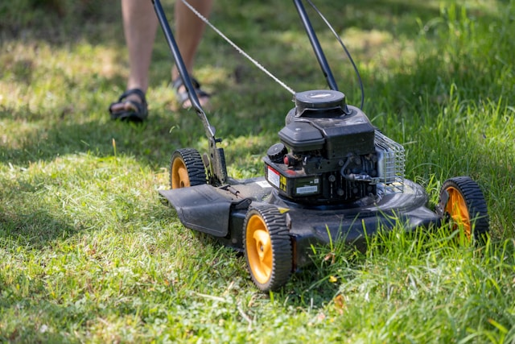
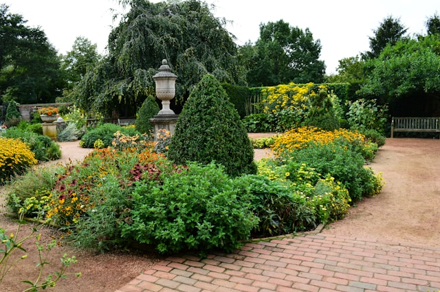
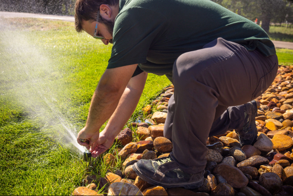

Our Services

Lawn Care
A healthy lawn is the foundation of a beautiful property. Our lawn care services include routine mowing, edging, trimming, fertilization, weed control, and seasonal maintenance to keep your grass looking its best throughout the year. We tailor our approach to the specific needs of your lawn, helping it stay lush, green, and resilient in every season. With reliable service and attention to detail, we make it easy to enjoy a well-maintained outdoor space.

Landscaping
Thoughtful landscaping can transform any outdoor space into a place you'll enjoy for years to come. Whether you're looking to refresh existing beds, install new plants, create decorative borders, or design a complete landscape, we work with you to bring your vision to life. We combine quality materials, careful craftsmanship, and practical design to create landscapes that are both beautiful and easy to maintain. Every project is customized to complement your home and enhance your property's curb appeal.

Irrigation
An efficient irrigation system keeps your landscape healthy while conserving water. We install, maintain, and repair sprinkler and irrigation systems that deliver the right amount of water where it's needed most. From seasonal startups and winterization to troubleshooting leaks and replacing damaged components, we help ensure your system operates efficiently year-round. Our goal is to protect your investment while keeping your lawn and landscape thriving.